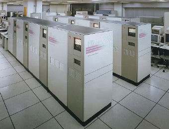
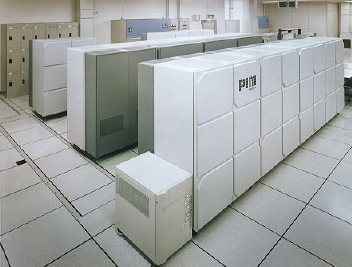
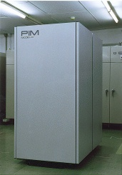
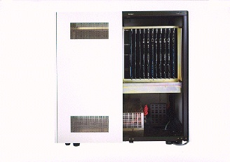
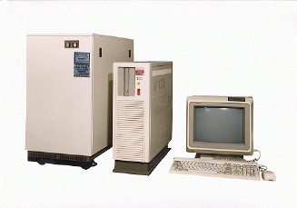

In the following, features 5 models of PIM are briefly described and compared.

PIM/p is the largest PIM model which contains maximum 512 processing elements (PEs). It was developed for both architectural research and parallel software R & D.
PIM/p takes multi-cluster structure. Each cluster contains eight PEs and a shared memory connected with shared bus. Interprocessor communication within a cluster is realized by coherent cache. The cache protocol is invalidation type. Maximum 64 clusters can be connected with hypercube network.
The PE of PIM/p has RISC-like instruction set and has a unique features called macro call for light-weight subroutine call.

PIM/m targets the parallel software development machine and rigid compatibility with the Multi-PSI.
Maximum 256 PEs can be connected with two dimensional mesh network.
The PE of PIM/m has CISC-like micro programmable instruction set.

PIM/c was developed for both architectural research and parallel software R & D. Maximum 256 processing elements can be connected.
PIM/c takes multi-cluster structure. Each cluster contains eight PEs and a shared memory connected with shared bus. Interprocessor communication within a cluster is realized by coherent cache. The cache protocol is invalidation type. Maximum 32 clusters can be connected with crossbar switch network.
The PE of PIM/c has CISC-like micro programmable instruction set.

PIM/k focuses on architectural research within a cluster. Hierarchical cache system has been investigated to connect larger number of PEs in a cluster. Maximum 16 PEs can be connected.
Four PEs share a local bus and second cache. They form a mini-cluster. Four mini-clusters and a shared memory are connected with shared bus. Interprocessor communication is realized by coherent cache. The cache protocol is invalidation type.
The PE of PIM/k has RISC-like instruction set.

PIM/i was developed for the experimental use of intra-cluster architecture.
A cluster consists of eight PEs and a shared memory connected with a shared bus. Interprocessor communication is realized by coherent cache. The cache protocol is broadcasting type.
The PE of PIM/i has LIW-type instruction set.
| Topology | # of Clusters | Total # of PEs | Memory Size / Cluster | |
|---|---|---|---|---|
| PIM/p | hypercube × 2 | 64 | 512 | 256 MB |
| PIM/m | mesh | 256 | 256 | 80 MB |
| PIM/c | crossbar | 32 | 256 | 160 MB |
| PIM/k | -- | 1 (four mini clusters) | 16 | 1 GB |
| PIM/i | -- | 2 | 16 | 320 MB |
| Instruction set | Cycle time | LSI fabrication | Line interval | |
|---|---|---|---|---|
| PIM/p | RISC + macro inst. | 60 nsec (design spec.) | standard-cell | 0.96 micron |
| PIM/m | CISC (micro programmable) | 65 nsec | standard-cell | 0.8 micron |
| PIM/c | CISC (micro programmable) | 50 nsec (design spec.) | gate-arrays | 0.8 micron |
| PIM/k | RISC | 100 nsec | custom | 1.2 micron |
| PIM/i | RISC | 100 nsec (design spec.) | standard-cell | 1.2 micron |
| # of PEs in a cluster | # of NIs in a cluster | Transfer Rate per channel | |
|---|---|---|---|
| PIM/p | 8 | 8 | 33 MB / sec × 2 (design spec.) |
| PIM/m | 1 | 1 | 8 MB / sec |
| PIM/c | 8 | 1 | 40 MB / sec (design spec.) |
| PIM/k | 16 | -- | -- |
| PIM/i | 8 | 1 | -- |
| coherence control | Mapping | Cache Size | |||
|---|---|---|---|---|---|
| Protocol | # of States | Instruction | Data | ||
| PIM/p | invalidation | 4 | 4 way | 64 KB | |
| PIM/m | -- | -- | direct | 5 KB | 20 KB |
| PIM/c | invalidation | 5 | 2 way | 80 KB | |
| PIM/k | hierarchical | 4 | (1st) direct | 128 KB | 256 KB |
| invalidation | (2nd) 4 way | 1 MB | 4 MB | ||
| PIM/i | broadcasting | 6 | direct | 160 KB | 160 KB |